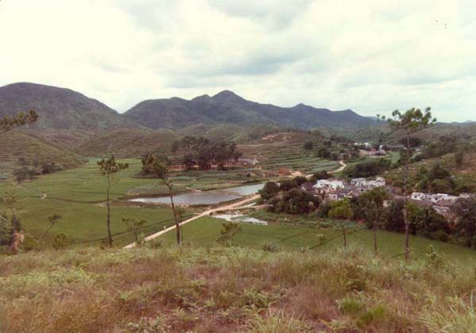

|  |
|
Photo taken by Gene in 1985 with comment from Yanying: The village on the right side is Lian Zhou * 連洲. The path extends to San Duo Li * 三多里. Now it is a concret road. In the middle of the picture, the rank houses among the trees was 5 villages Primary School * 育秀小學. Yu Xiu Primary School is not used as a school anymore. More and more schools have been combined because there are less children being enrolled. |